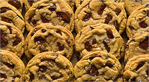

Big, Fat, Chewy Chocolate Chip Cookie
These cookies are the pinnacle of perfection! If you want a big, fat, chewy cookie like the kind you see at bakeries and specialty shops, then these are the cookies for you!

Ingredients
- 2 cups all-purpose flour
- 1/2 teaspoon baking soda
- 1/2 teaspoon salt
- 3/4 cup unslated, butter, melted
- 1 cup packed brown sugar
- 1/2 cup white sugar
- 1 tablespoon vanilla extract
- 1 egg
- 1 egg yolk
- 2 cups semisweet chocolate chips
Directions
- Preheat the oven to 325 degrees F (165 degrees C). Grease cookie sheets or line with parchment paper.
- Sift together the flour, baking soda and salt; set aside.
- In a medium bowl, cream together the melted butter, brown sugar and white sugar until well blended. Beat in the vanilla, egg, and egg yolk until light and creamy. Mix in the sifted ingredients until just blended. Stir in the chocolate chips by hand using a wooden spoon. Drop cookie dough 1/4 cup at a time onto the prepared cookie sheets. Cookies should be about 3 inches apart.
Recipe Source